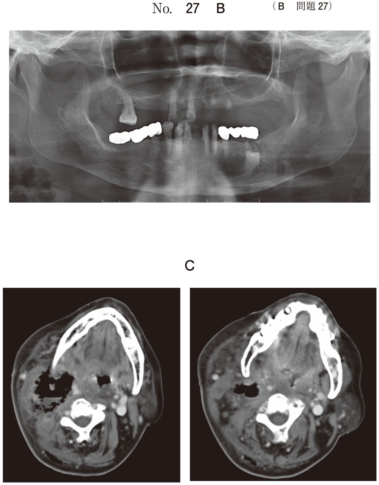
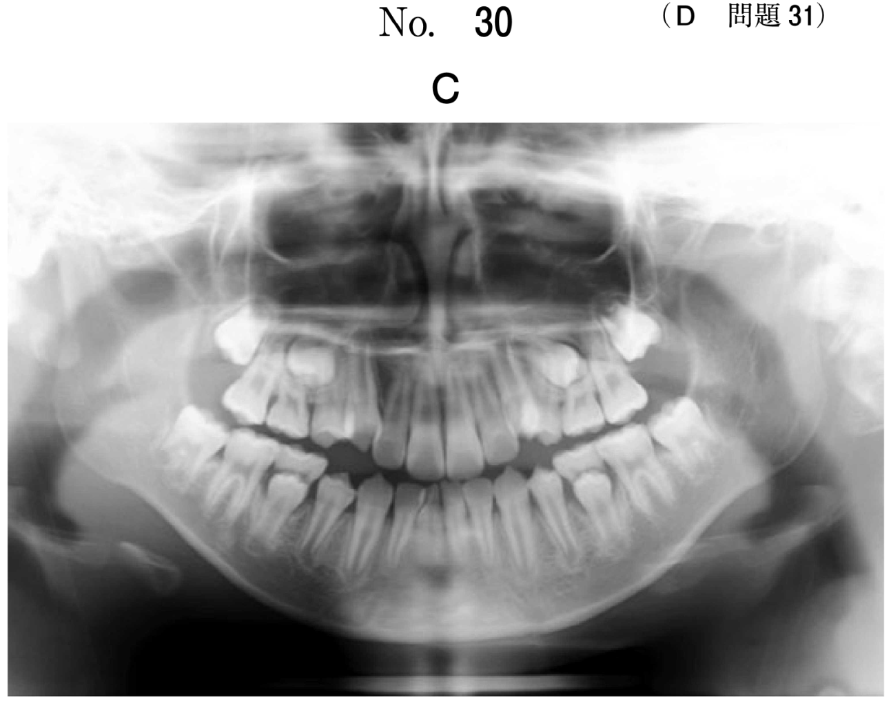

抜髄（麻酔抜髄法）
概要
麻酔抜髄法は、歯髄への炎症が根部歯髄まで波及している場合に、歯髄をすべて除去し、根尖歯周組織や永久歯歯胚への炎症の波及を防止する方法。
適応（頻出）
抜髄の適応
- 急性化膿性歯髄炎（全部性）
- 慢性潰瘍性歯髄炎（全部性）
- 慢性増殖性歯髄炎（全部性）
- 炎症が根管歯髄にまで波及している場合
抜髄と生活断髄の鑑別（頻出）
| 所見 | 生活断髄 | 抜髄 |
|---|---|---|
| 自発痛 | 軽度または一過性 | 持続的にあり |
| 打診痛 | なし | あり |
| インピーダンス値 | 15〜18kΩ（仮性露髄〜閉鎖性） | 12kΩ以下（露髄） |
| 炎症の範囲 | 冠部歯髄に限局 | 根管歯髄にも波及 |
打診痛の有無が生活断髄と抜髄の重要な鑑別点
乳歯の根管充填（頻出）
使用材料の組み合わせ
| 根管充填材 | 仮封材 | 適否 |
|---|---|---|
| ヨードホルム製剤 | グラスアイオノマーセメント | 正解 |
| パラホルム製剤 | − | ×（毒性あり、使用しない） |
| ガッタパーチャ | − | ×（吸収しない、乳歯に不適） |
ヨードホルム製剤を使用する理由
- 吸収性がある → 乳歯の生理的歯根吸収に対応
- 後継永久歯の萌出を妨げない
- 抗菌作用がある
過去問
108B43
5歳の女児。下顎右側第一乳臼歯の自発痛を主訴として来院した。3週前から軽度の冷水痛を訴えたが放置していたという。垂直および水平打診に反応を示す。インピーダンス測定の結果は12.5kΩであった。初診時の口腔内写真（別冊No.43A）とエックス線写真（別冊No.43B）を別に示す。適切な治療はどれか。1つ選べ。


a コンポジットレジン修復
b 直接覆髄法
c 抜髄法
d 感染根管治療
e 抜 歯
b 直接覆髄法
c 抜髄法
d 感染根管治療
e 抜 歯
正解：c
【解説】自発痛あり、打診痛あり、インピーダンス12.5kΩ（露髄）→ 炎症が根管歯髄にも波及。抜髄法の適応。打診痛がなければ生活断髄だが、打診痛があるため抜髄となる。
110D44
4歳の女児。下顎右側第二乳臼歯の食事中の疼痛を主訴として来院した。2か月前から時々冷水痛を訴えたがそのままにしていたという。軽度の打診痛を認める。初診時の口腔内写真（別冊No.43A）とエックス線写真（別冊No.43B）を別に示す。適切な処置はどれか。1つ選べ。


a 間接覆髄
b 直接覆髄
c 生活断髄
d 抜 髄
e 抜 歯
b 直接覆髄
c 生活断髄
d 抜 髄
e 抜 歯
正解：d
【解説】冷水痛あり、軽度の打診痛あり → 炎症が根管歯髄にも波及している。抜髄の適応。打診痛があれば生活断髄ではなく抜髄を選択。
111D46
乳歯の麻酔抜髄で根管拡大後の術式と使用薬剤・材料を図に示す。組合せで正しいのはどれか。1つ選べ。

a パラホルム製剤――リン酸亜鉛セメント
b パラホルム製剤――グラスアイオノマーセメント
c ヨードホルム製剤――MTAセメント
d ヨードホルム製剤――グラスアイオノマーセメント
e クロロフェノール製剤――リン酸亜鉛セメント
b パラホルム製剤――グラスアイオノマーセメント
c ヨードホルム製剤――MTAセメント
d ヨードホルム製剤――グラスアイオノマーセメント
e クロロフェノール製剤――リン酸亜鉛セメント
正解：d
【解説】乳歯の根管充填にはヨードホルム製剤（吸収性があり、乳歯の生理的歯根吸収に対応）を使用。仮封にはグラスアイオノマーセメントが適切。パラホルム製剤は毒性があり使用しない。